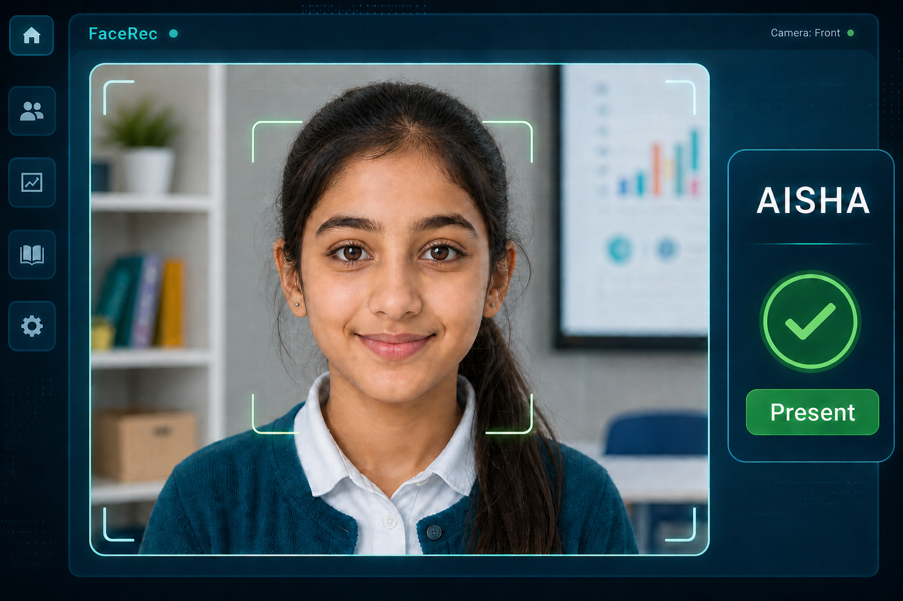

Face Detection Attendance System
A local computer vision project that enrolls students, trains a face recognizer, scans webcam video, and marks attendance automatically in a CSV record.

Project Flow
Recent Records
| Name | Time | Status |
|---|---|---|
| Rahul | 09:14 | Present |
| Aisha | 09:16 | Present |
What Students Learn
The dashboard turns the project into a clear lesson on Python, OpenCV, machine learning basics, webcam input, and structured attendance records.
Face Detection
OpenCV locates faces in each webcam frame before recognition begins.
Face Recognition
The LBPH recognizer compares detected faces with enrolled student samples.
Auto Attendance
Known students are marked present once per day to avoid duplicate entries.
Streamlit App
A local browser dashboard makes enrollment, training, scanning, and reporting simple.
System Workflow
This is the complete journey from a student's first face capture to automatic attendance in the records table.
Enroll
Enter the student name and capture multiple face samples using the webcam.
Train
Convert saved face images into a trained local recognition model.
Recognize
Scan live camera frames and compare each detected face with known labels.
Record
Write date, time, ID, name, and present status into the attendance CSV file.
Run Locally
Use these commands after showing the dashboard, then switch to the live Streamlit demo.
Launch Streamlit
cd C:\Users\Dell\face_detection
.\face_detection_venv\Scripts\Activate.ps1
python -m streamlit run streamlit_app.py
Project Files
- attendance_system.py contains the OpenCV recognition logic.
- streamlit_app.py provides the local browser interface.
- data/faces stores enrolled student face samples.
- attendance/attendance.csv stores automatic attendance records.